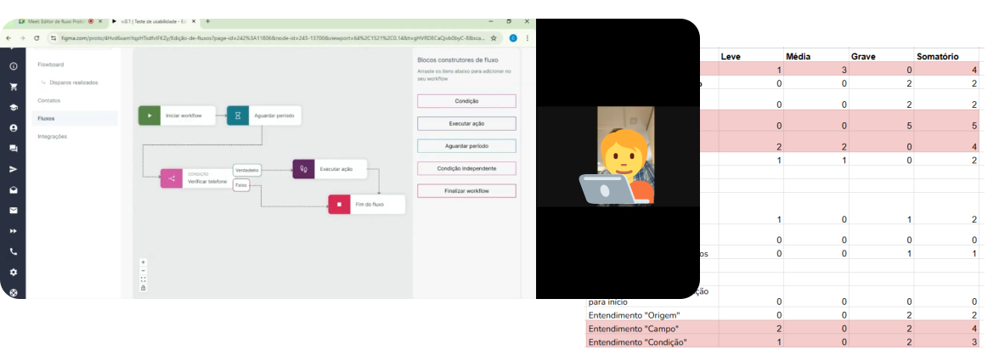
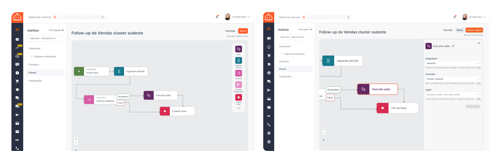

33%
of squad tickets were requests for agent changes.
Case Study
How redesigning a complex drag-and-drop conversational editor into a simplified template library boosted monthly activations by +40%.
of squad tickets were requests for agent changes.
of accounts were activated within the first 4 weeks.
average setup time per agent after redesign.
Context & Challenge
Users could build powerful automations, but the experience felt too technical for non-developers. The result was slow activation, rising support demand, and a weak first impression.
Discovery & Strategy
Mapped the activation path to uncover where users got stuck and what assumptions were missing.
Aligned design, product, and engineering around opportunities worth prioritizing first.
Used a matrix of Certainties, Suppositions, and Doubts to focus the effort on high-confidence bets.
Key insight: Even custom workflows share common baseline structures. A standard Agent Template Library could reduce friction without removing flexibility.
Design Process
I first sketched the concept by hand to think through and quickly validate the idea with the product triad.
From there, I built a wireframe in Figma Make to test the tool and iterate through group brainstorming sessions.

Testing & Iteration
I ran two rounds of qualitative testing with internal staff and hotel clients. The clearest pain points were confusion around field names, hidden descriptions, and misunderstood conditional logic such as AND vs. OR.

The Solution
Users could browse validated AI agents and activate them in less than a minute with predefined settings.
The advanced editing surface stayed powerful but significantly less visually noisy, helping users focus on what mattered next.

Product launch concept
A visual exploration of launch messaging and visual hierarchy in a modern product experience.
Outcomes
increase in monthly activations compared to the previous builder.
growth in HSM revenue share, reaching a 50/50 split with the main platform.
of clients generated sales using an agent from the library within 30 days.
of activations in the launch month came through the new agent library.
total journey time, from entering the library to activating an agent.